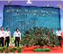

- 

学习工作
科普出版社3种图书入选...
6月1日，新闻出版总署“2012年向全国青少年推荐百种优秀图书新闻发种少接力出版社...详情>>
- 北京科普资源共享服务平台成功上线运行12-06-15
- 北京科普资源共享服务平台成功上线运行12-06-15
- 北京科普资源共享服务平台成功上线运行12-06-15
- 北京科普资源共享服务平台成功上线运行12-06-15
通知公告
关于举办“石家庄市第三届学术
关于2012年度中国科协直属单位公开招聘高校毕业生拟录用人选...

石家庄科协党建